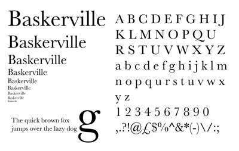

John Baskerville (1706–1775) was an English businessman whose entrepreneurial attentions included japanning and papier-mâché; he is, however, best remembered as a typographer and printer, not least for the design of the eponymous typeface which, to this very day, bears his name.
The Man
Baskerville was born in the village of Wolverley, near Kidderminster in Worcestershire, and worked as a printer in Birmingham. Baskerville printed works for the University of Cambridge and, although an atheist, printed a splendid folio bible in 1763. His typefaces were greatly admired by Benjamin Franklin, a printer and fellow member of the Royal Society of Arts, who took the designs back to the newly-created United States, where they were adopted for most federal government publishing.
Baskerville was responsible for numerous innovations in printing, paper and ink production. He developed a technique which produced a smoother whiter paper which showcased his strong black type. He also pioneered a completely new style of typography, adding wide margins and generous leading to improve legibility.
"Having been an early admirer of the beauty of letters, I became insensibly desirous of contributing to the perfection of them. I formed to myself ideas of greater accuracy than had yet appeared, and had endeavoured to produce a set of types according to what I conceived to be their true proportion."
—John Baskerville, preface to Milton, 1758 (Anatomy of a Typeface)
The Typeface
Baskerville is a Transitional serif typeface designed by John Baskerville in 1757, positioned between the Old Style typefaces of William Caslon, and the modern styles of Giambattista Bodoni and Firmin Didot.
The typeface is the result of Baskerville’s intent to improve upon the types of William Caslon. He increased the contrast between thick and thin strokes, making the serifs sharper and more tapered, and shifted the axis of rounded letters to a more vertical position. The curved strokes are more circular in shape, and the characters became more regular. These changes created a greater consistency in size and form.
Baskerville’s work was criticized by jealous competitors and soon fell out of favour. Since the 1920s, however, numerous revivals of Baskerville have been released by Linotype, Monotype, and other type foundries. Émigré released a popular revival of the typeface in 1996 called Mrs Eaves, named for Baskerville’s wife, Sarah Eaves. Baskerville represents the peak of Transitional type face design and bridges the gap between Old Style and Modern type design.
Examples of Typefaces Designed by Baskerville
- Hot Type Versions
- Cold Type Versions
- Digital Versions
Mrs Eaves
Mrs Eaves is named after Sarah Eaves, the woman who became John Baskerville's wife. As Baskerville was setting up his printing and type business, Mrs. Eaves moved in with him as a live-in housekeeper, eventually becoming his wife after the death of her first husband, Mr. Eaves. Mrs Eaves is a revival of the types of English printer and punchcutter John Baskerville, and is related to contemporary Baskerville typefaces.
Like Baskerville, Mrs Eaves, cut by Zuzana Licko of Émigré, has a near vertical stress, departing from the Old Style model. Identifying characters, similar to Baskerville's types, are the lowercase g with its open lower counter and swashlike ear. Both the roman and italic uppercase Q have a flowing swashlike tail. The uppercase C has serifs at top and bottom; there is no serif at the apex of the central junction in uppercase W; and the uppercase G has a sharp spur suggesting a vestigial serif.